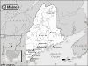

Maine

Attention: If you use this or any of the AIRS lists in any state, please report any bad phone numbers or emails to the webmaster. This is the responsibility of all users, including you. Thank you!
Ned Savoie
(ned@harbourlight.com)
CROSSROADS: I-95 and NH Route 4/16
Kittery, 03905
PHONE: 603.498.6233
BUSES: 78 Westfalia
COMMENTS:
My Company is in Portsmouth, NH, and I can usually be reached there at 603.427.2821.
I live in Southern Maine, but spend a lot of time in the Portsmouth area as well.
AVAILABLE: Most anytime, don't call much after 11pm unless desperate.
familiar with: fuel injection, type4 engine
I CAN PROVIDE THE FOLLOWING SERVICES:
INTERNET ACCESS
TOOLS
TELEPHONE ACCESS
SPARE ROOM
MECHANICAL HELP
SPACE TO WORK ON BUS
STORAGE SPACE
PARTS AVAILABLE
COFFEE/TALK
TRANSPORTATION HELP
CAMPING SPOT: 4 nights or more
Favorite beer type: Anything cold
Matt Schreiber
(Infusion44@hotmail.com)
CROSSROADS: I-95 and Rt. 196
Sabattus, 04280
PHONE: 207-212-7355 (cell) 207-777-4832(until 11pm)
VW'S: 78 Westy(dd), 89 Cabriolet(dd), 70 Karmann Ghia, 55 Single-Cab
COMMENTS: Love to meet VW's and their owners. There is always room for one more,
right?
AVAILABLE: Until 11:00 at home or anytime on cellphone.
I CAN PROVIDE THE FOLLOWING SERVICES:
INTERNET ACCESS
TOOLS
TELEPHONE ACCESS
TRANSPORTATION HELP
MECHANICAL HELP
SPACE TO WORK ON BUS
PARTS AVAILABLE
COFFEE/TALK
CAMPING SPOT: 3 nights
SPARE ROOM
Favorite beer type: Anything cold
Justin Andrus
EMAIL: jandrus_at_alumni_dot_bates_dot_edu
CROSSROADS: Portland, ME
CITY: Brunswick, ME, 04011
PHONE: 207-831-8338
VW'S: Between them at the moment
AVAILABLE: Whenever - for the most part
I am familiar with: type4 engine
I CAN PROVIDE THE FOLLOWING SERVICES:
INTERNET ACCESS
TOOLS
TELEPHONE ACCESS
TRANSPORTATION HELP
MECHANICAL HELP
COFFEE/TALK
CAMPING: none
SPARE ROOM: 1 night
Favorite beer type: Thick and chewy
Lee Graf
(lgraf@unity.unity.edu)
CROSSROADS: Maslin Rd.
Lincolnville, 04849
PHONE: 207 763 4395
VW'S: 65 Baja/Pickup creation, 64 Kombi
COMMENTS: I live in a Yurt!
AVAILABLE: Mon thru Fri 4:30pm on Sat and Sun Totally Free
familiar with: 1300, 1500, 1600, fuel injection, type4 engine
I CAN PROVIDE THE FOLLOWING SERVICES:
INTERNET ACCESS
TOOLS
TELEPHONE ACCESS
TRANSPORTATION HELP
MECHANICAL HELP
SPACE TO WORK ON BUS
PARTS AVAILABLE
COFFEE/TALK
CAMPING SPOT: 3 nights
Favorite beer type: Micro brands
kurt berger
(gruven2@midmaine.com)
CROSSROADS: rt. 302 and 117
Bridgton, 04009
PHONE: 647-5625
ONLY CALL IF EMERGENCY
VW'S: 1972 bus campmobile
COMMENTS: will offer whatever help I can. I have experience working on my own bus
and have afew copies of the idiots guide and workshop manuals. I homebrew and usually have
something tasty on tap!
AVAILABLE: weekends and weekday evenings/call leave message as well
familiar with: dual carbs, type4 engine
I CAN PROVIDE THE FOLLOWING SERVICES:
INTERNET ACCESS
TOOLS
TELEPHONE ACCESS
TRANSPORTATION HELP
MECHANICAL HELP
SPACE TO WORK ON BUS
PARTS AVAILABLE
Favorite beer type: Micro brands
Richard T. Young Jr.
(bussesbythebuoy@yahoo.com)
CROSSROADS: Route 77
Cape Elizabeth, 04107
PHONE: 207-799-0129
VW'S: 1962 Ragtop, 1975 Westfalia, 1991 Westfalia
AVAILABLE: Whenever
I CAN PROVIDE THE FOLLOWING SERVICES:
TOOLS
TRANSPORTATION HELP
MECHANICAL HELP
SPACE TO WORK ON BUS
PARTS AVAILABLE
COFFEE/TALK
CAMPING SPOT: 4 nights or more
SPARE ROOM: 2 nights
Favorite beer type: Anything cold
Sherb de Garmo
(spdegarmo@webtv.net)
CROSSROADS: Rt 1 and River Road
Newcastle, 04553
PHONE: 207-563-1589
VW'S: '78 and '79 bus
COMMENTS: I don't have a lot of experience with air cooled, but I am learning. I do have a
very competent garage that work on VW only.
AVAILABLE: most any time
familiar with: fuel injection
I CAN PROVIDE THE FOLLOWING SERVICES:
INTERNET ACCESS
TOOLS
TELEPHONE ACCESS
TRANSPORTATION HELP
SPACE TO WORK ON BUS
STORAGE SPACE
PARTS AVAILABLE
COFFEE/TALK
CAMPING SPOT: 4 nights or more
SPARE ROOM: 2 nights
Direwolf
CROSSROADS: route 5 and route 302
travis_mcfarlin@umit.maine.edu
CITY: Fryeburg
VW'S: 1978 westfalia
AVAILABLE: weekends anytime
I am familiar with: 1776+
I can provide: INTERNET ACCESS, TOOLS, TELEPHONE ACCESS, SPACE TO WORK ON BUS, COFFEE/TALK
CAMPING: 1 night
SPARE ROOM: none
Favorite beer type: Thick and chewy
Leah
EMAIL: Leah@planetdog.com
CROSSROADS: Rte 302 & I-295
CITY: Portland, 04103
PHONE: 207-871-9947
VW'S: 1973 Westfalia
COMMENTS: I'm still new at this, but I'd be happy to help if I can.
AVAILABLE: Whenever
I am familiar with: 1776+, dual carbs
I CAN PROVIDE THE FOLLOWING SERVICES
TOOLS
TELEPHONE ACCESS
TRANSPORTATION HELP
MECHANICAL HELP
COFFEE/TALK
CAMPING: none
SPARE ROOM: none
Favorite beer type: Anything cold
Beth Marino
EMAIL: lmarino_2000_at_yahoo_dot_com
CROSSROADS: 95N exit 4 (Biddeford)
CITY: Biddeford, 04005
PHONE: 207.229.5863
VW'S: 1976 Westfalia
COMMENTS: I am a student so I am pretty busy but I am willing to help anyone in
a pinch and if there is time in my schedule I would be available to visit.
AVAILABLE: It is hit or miss.
I CAN PROVIDE THE FOLLOWING SERVICES
INTERNET ACCESS
TELEPHONE ACCESS
TRANSPORTATION HELP
CAMPING: none
SPARE ROOM: 4 nights or more
Favorite beer type: Thick and chewy
Ernie Berry
EMAIL: berrysvw_at_metrocast_dot_net
CROSSROADS: rt202 , I-95 ,rt109
lebanon, 04027
PHONE: (207) 457-3067
VW'S: 76riviera bus,67 baja bug,65ghia,92passat,58beetle,70westy
COMMENTS: I am a vw mechanic with Berangers VW in Rochester N.H..My wife is a
3rd shift baker,she sleeps in midday.I would love to help if I can.
AVAILABLE: weekends and friday afternoons mainly. May be able to make acceptions.
I am familiar with: 1600, type4 engine
I CAN PROVIDE THE FOLLOWING SERVICES
INTERNET ACCESS
TOOLS
TELEPHONE ACCESS
TRANSPORTATION HELP
MECHANICAL HELP
SOME PARTS
COFFEE/TALK
CAMPING: 2 nights
SPARE ROOM: none
Favorite beer type: I don't drink
P.J.
EMAIL: Pajetta831_at_hotmail_dot_com
CROSSROADS: Route one and Route 35
CITY: Kennebunk
ZIP CODE: 04046
PHONE: 207-459-4845
VW'S: 1970 tyype 2
AVAILABLE: varied schedule, just call or email and I will let you know if I can
help
I am familiar with: 1600
I CAN PROVIDE THE FOLLOWING SERVICES:
TOOLS
TELEPHONE ACCESS
TRANSPORTATION HELP
SPACE TO WORK ON BUS
COFFEE/TALK
CAMPING: 2 nights
SPARE ROOM: 2 nights
Favorite beer type: Micro brands
Mike Collum
EMAIL: collum@verizon.net
CROSSROADS: Last stop on I-95 before entering New Brunswick, Canada
Houlton, 04730
PHONE: 207 532-1185
VW'S: '84 Vanagon GL 7 pass and '85 Vanagon GL Westy
COMMENTS: We have a 22 room Victorian so there's always a place to stay.
There is plenty of yard and the driveway and parking are ample including a long
extension cord for "shore power" should you desire to use the
facilities of your own bus. You needn't have an emergency in order to stop
by to chat and have coffee, or take a break, or kick back and rest up for
awhile. You may call at any hour. I was a Submariner for 22 years so
I'm not new to impromptu happenings or events.
I have owned and performed major work on a number of VWs of various types since
the 60s and have owned one of my Vanagons since 1991. Since I've had them,
all work has been performed at home (or by me on the road, heheheheh).
AVAILABLE: Anytime
I am familiar with: 36hp, 1200, 1500, fuel injection, wasserboxer
I CAN PROVIDE THE FOLLOWING SERVICES
INTERNET ACCESS
TOOLS
TELEPHONE ACCESS
TRANSPORTATION HELP
MECHANICAL HELP
SPACE TO WORK ON BUS
STORAGE SPACE
SOME PARTS
COFFEE/TALK
CAMPING: 4 nights or more
SPARE ROOM: MOVE IN!!! :)
Favorite beer type: Commercial brands
Randy McMullin
EMAIL: hawkiz_at_verizon_dot_net
CROSSROADS: I-95 and Saco Exit #5
CITY: Old Orchard Beach
ZIP CODE: 04063
PHONE: 207-934-2190
ONLY CALL IF EMERGENCY
VW'S: 1979 Westy
COMMENTS: I have some tools and some shop.
Good camping just down the road.
AVAILABLE: I go to bed at 10 PM.
I am familiar with: 1200, 1300, 1500, 1600, fuel injection, type4 engine
I CAN PROVIDE THE FOLLOWING SERVICES:
INTERNET ACCESS
TOOLS
TELEPHONE ACCESS
TRANSPORTATION HELP
MECHANICAL HELP
SPACE TO WORK ON BUS
CAMPING: 4 nights or more
SPARE ROOM: none
Favorite beer type: Anything cold
Alexander Fee
EMAIL: redsail6_at_hotmail_dot_com
CROSSROADS: Rt. 1 &17
CITY: Rockland, 04858
VW'S: 1973 Type "Campmobile"
COMMENTS: Work on a schooner on the coast, so I"m not always in. There is
always a safe place to park though.
I am familiar with: type4 engine
I CAN PROVIDE THE FOLLOWING SERVICES
TOOLS
TELEPHONE ACCESS
TRANSPORTATION HELP
SPACE TO WORK ON BUS
COFFEE/TALK
CAMPING: 2 nights
SPARE ROOM: none
Favorite beer type: Micro brands
Mark Pollard
EMAIL: mspno5_at_hotmail_dot_com
CROSSROADS: R 109 and Rt 9
CITY: Wells, 04090
PHONE: 207-749-4589
VW'S: 79 Westfalia
COMMENTS: I have rebuilt the engine in my 79 Westy and am currently trouble
shooting a few problems. As soon as these bugs are worked out, I will be
hitting the two lanes of this country to do a year of exploring.
Translation: many of you will probably be hearing from me.
AVAILABLE: Any time until 10 PM.
I am familiar with: 1776+, fuel injection
I CAN PROVIDE THE FOLLOWING SERVICES
INTERNET ACCESS
TOOLS
TELEPHONE ACCESS
TRANSPORTATION HELP
MECHANICAL HELP
CAMPING: none
SPARE ROOM: none
Favorite beer type: Micro brands
Ross
CROSSROADS: Rt. 1
CITY: York
ZIP CODE: 03909
PHONE: (207) 351-1986
VW'S: '57 dd panel+bug, '58dc, '59bug, '67camper
AVAILABLE: usually around
I am familiar with: 36hp, Bastard40hp, 1200, 1300, 1500, 1600
I CAN PROVIDE THE FOLLOWING SERVICES
INTERNET ACCESS
TOOLS
TELEPHONE ACCESS
TRANSPORTATION HELP
MECHANICAL HELP
SPACE TO WORK ON BUS
STORAGE SPACE
SOME PARTS
COFFEE/TALK
CAMPING: 2 nights
SPARE ROOM: 2 nights
Favorite beer type: Anything cold
Jordan Cyr
EMAIL: cyrjordan_at_hotmail_dot_com
CROSSROADS: Rt 1/Rt 161
CITY: Caribou
ZIP CODE: 04736
PHONE: 207-227-4844
VW'S: 1969 VW Bus, 1967 VW Custom Beetle, 1971 VW Beetle, 1962 VW Empi Dune
Buggy
COMMENTS: If your ever around Caribou, Maine give me a call. I have been into
VW's for about 10 years now. I know the basic mechanics and I have many parts.
Feel free to stop in if your in the area!
AVAILABLE: Call anytime, day or night for emergencies or stop in to have a
coffee.
I am familiar with: 25hp, 36hp, Bastard40hp, 1200, 1300, 1500, 1600
I CAN PROVIDE THE FOLLOWING SERVICES
INTERNET ACCESS
TOOLS
TELEPHONE ACCESS
TRANSPORTATION HELP
MECHANICAL HELP
SPACE TO WORK ON BUS
STORAGE SPACE
SOME PARTS
COFFEE/TALK
CAMPING: 1 night
SPARE ROOM: none
Favorite beer type: Anything cold
Mike Faulkingham
EMAIL: penandthink_at_hotmail_dot_comc
CITY: South Portland
ZIP CODE: 04106
PHONE: 207-838-7980
VW'S: 1978 Transporter
COMMENTS: New to working on my own bus, but willing to give whatever help I can
when someone needs it.
AVAILABLE: Anytime someone needs help
I am familiar with: fuel injection
I CAN PROVIDE THE FOLLOWING SERVICES
INTERNET ACCESS
TOOLS
TELEPHONE ACCESS
TRANSPORTATION HELP
SPACE TO WORK ON BUS
CAMPING: 2 nights
SPARE ROOM: 2 nights
Favorite beer type: Beer is for wimps!
Samuel Pressey
EMAIL: sam_at_oldveedubs_dot_com
CROSSROADS: Route 2
CITY: Hampden
ZIP CODE: 04444
PHONE: 207-947-0955
VW'S: 1984 Rabbit Convertible, 1988 Jetta GLI 16V, 1978 Rabbit, 1981 Rabbit,
1974 T2 Westfalia, 1963 T3 Squareback, 1988 Golf
COMMENTS: I mostly have experience with A1/A2/A3 cars, but I just bought a westy
and I am learning more about air-cooled cars as I go. I have a pretty good
library of VW manuals and lots of parts around ranging from '58 Beetle to '99
Jetta.
AVAILABLE: Evenings and Weekends
I am familiar with: 1776+, fuel injection, wasserboxer, conversions
I CAN PROVIDE THE FOLLOWING SERVICES
INTERNET ACCESS
TOOLS
TELEPHONE ACCESS
TRANSPORTATION HELP
MECHANICAL HELP
SOME PARTS
COFFEE/TALK
CAMPING: 2 nights
SPARE ROOM: none
Favorite beer type: Thick and chewy
Jacob Hepner
CROSSROADS: Rte 1 & Rte 137
CITY: Belfast
ZIP CODE: 04915
PHONE: (207) 342-5231
VW'S: 65 Camper, 73 Thing, 80 Rabbit diesel
COMMENTS: I was a VW mechanic for 5 years and am familiar with all air cooled
VWs and earlier liquid cooled. I have limited access to used parts.
AVAILABLE: anytime before 10 pm
I am familiar with: 25hp, 36hp, Bastard40hp, 1200, 1300, 1500, 1600, 1776+, dual
carbs, fuel injection, type4 engine, diesel, conversions
I CAN PROVIDE THE FOLLOWING SERVICES
TOOLS
TELEPHONE ACCESS
TRANSPORTATION HELP
MECHANICAL HELP
SPACE TO WORK ON BUS
CAMPING: 2 nights
SPARE ROOM: none
Favorite beer type: Anything cold
Dave
EMAIL: dcjlk_at_megalink_dot_net
CROSSROADS: Route 26 and Skeefield Road
CITY: Oxford
ZIP CODE: 04270
PHONE: 207 743-6152
VW'S: 61,74 Beetle 66,88 Westies, 72 Squareback
COMMENTS: Used to have a restoration business.
I am familiar with: 1200, 1300, 1500, 1600, dual carbs, fuel injection, type4
engine, wasserboxer, conversions
I CAN PROVIDE THE FOLLOWING SERVICES
INTERNET ACCESS
TOOLS
TELEPHONE ACCESS
TRANSPORTATION HELP
MECHANICAL HELP
SPACE TO WORK ON BUS
SOME PARTS
COFFEE/TALK
CAMPING: 2 nights
SPARE ROOM: 1 night
Favorite beer type: Anything cold
David Knightly
EMAIL: dcjlk_at_megalink_dot_com
CROSSROADS: Route 26 and Skeefield Road
CITY: Oxford, 04270 PHONE: 890-9601
VW'S: 78 westy 74 Beetle 72 squareback
COMMENTS: have parts, garage and know-how
I am familiar with: fuel injection, wasserboxer, conversions
I CAN PROVIDE THE FOLLOWING SERVICES
TOOLS
TELEPHONE ACCESS
TRANSPORTATION HELP
MECHANICAL HELP
SPACE TO WORK ON BUS
SOME PARTS/CAN GET THEM
CAMPING: 1 night SPARE ROOM: none
Favorite beer type: I don't drink
Bruce
EMAIL: bruce_at_philsforeignauto_dot_com
CROSSROADS: Broadway and I95
CITY: South Portland, 04106
PHONE: 207-767-5008
COMMENTS: Professional shop. I have been working on VW's for over 25 years. VW's
are one of our specialties, and I personally have extensive experience with air
cooled VW's Check out our website at www.philsforeignauto.com
AVAILABLE: Mon-Fri 8:30-5:30, Sorry, not available weekends.
I am familiar with: 25/36hp, 1200/1300, 1500/1600, 1776+, dual carbs, fuel
injection, type4 engine, wasserboxer, diesel
I CAN PROVIDE THE FOLLOWING SERVICES
INTERNET ACCESS
TELEPHONE ACCESS
TRANSPORTATION HELP
MECHANICAL HELP
SOME PARTS/CAN GET THEM
CAMPING: none
SPARE ROOM: none
Favorite beer type: I don't drink
Mark Phillips
EMAIL: Mark_the_singer_at_yahoo_dot_com
CROSSROADS: Routes 16 and 11
CITY: Milo, 04463
PHONE: 207 943-5146
VW'S: 1971 Transporter Van
AVAILABLE: Don't call after Nine o'clock, EST
I CAN PROVIDE THE FOLLOWING SERVICES
INTERNET ACCESS
TOOLS
TELEPHONE ACCESS
MECHANICAL HELP
COFFEE/TALK
CAMPING: 1 night SPARE ROOM: none
Favorite beer type: Home brews 'XXX'
{kind=link}